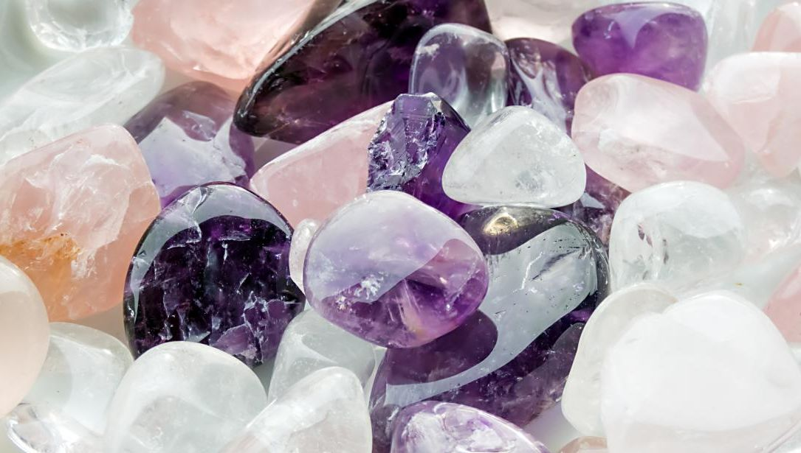
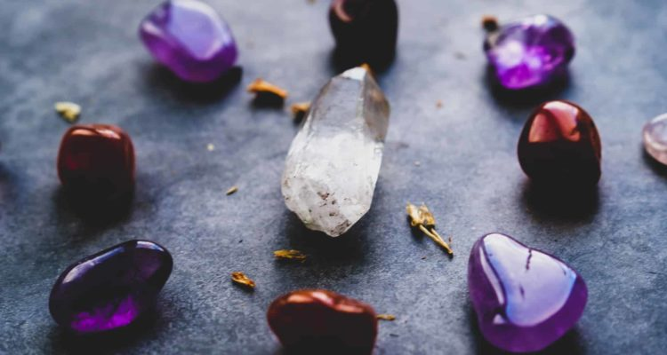
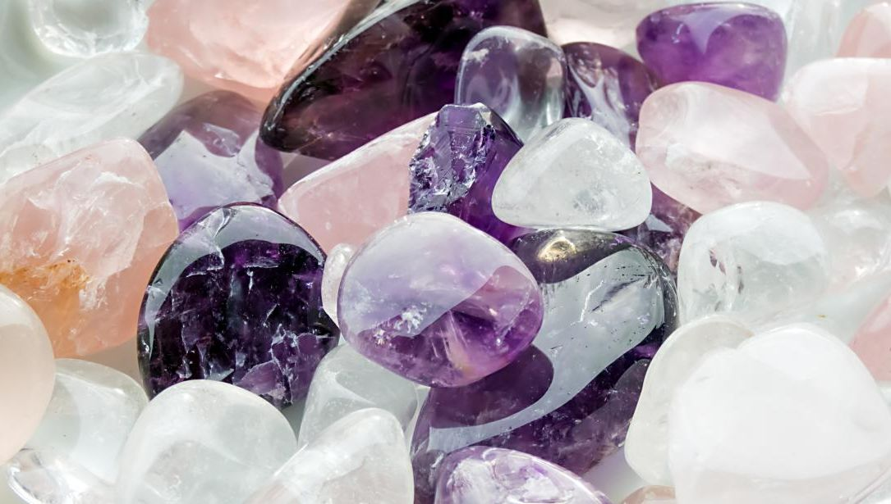
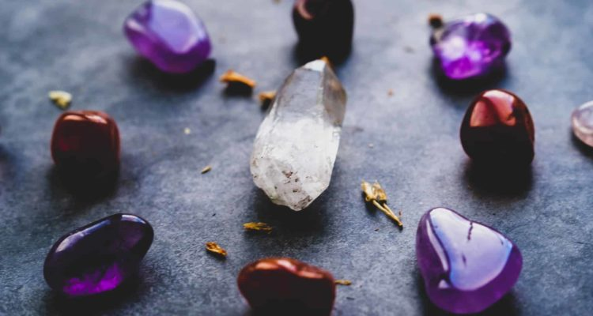
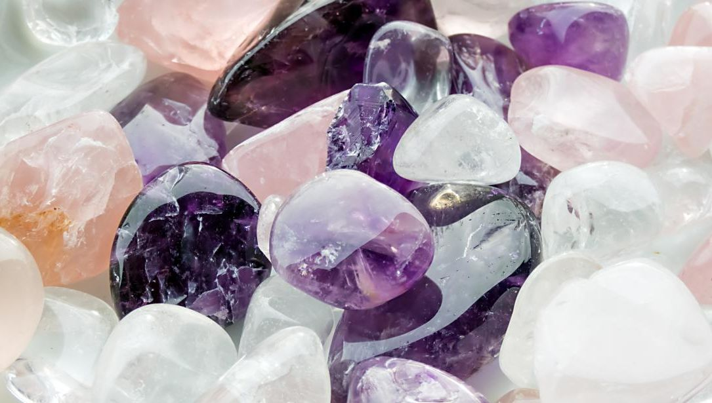
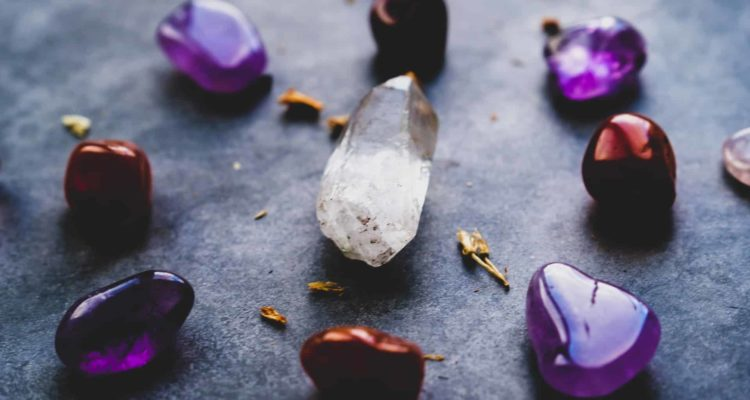
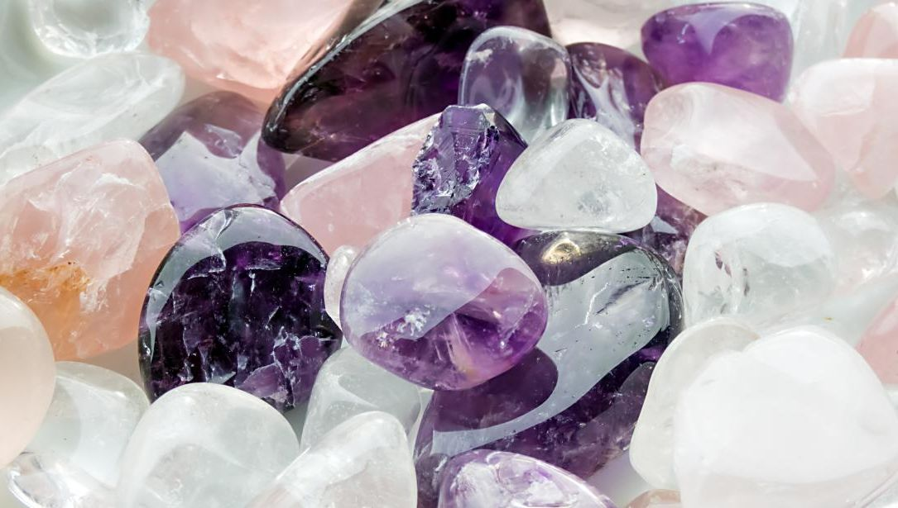
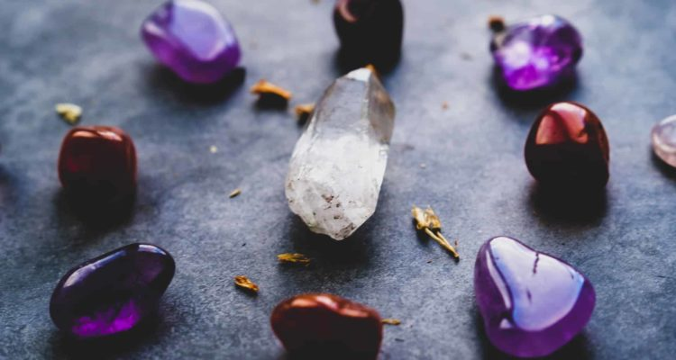

Bienvenue dans la partie Gemmes
 







La gemmologie, étymologiquement, vient du terme latin « gemma » signifiant « bourgeon » ou « joyau » au sens figuré et du terme grec « logos » signifiant « étude ». Il s’agit donc d’une discipline consacrée à l’étude des pierres précieuses ou semi-précieuses, fines et ornementales. Cette science constitue une branche de la minéralogie.
La gemmologie ne se limite pas à la connaissance des gemmes. Cette discipline prend en compte de nombreuses autres opérations, y compris la détermination de la composition des pierres et métaux précieux, leur polissage, leur taille et leur alliage. Un gemmologue possède les compétences pour évaluer la qualité et la valeur d’une gemme. Ce professionnel définit les types de pierres et métaux précieux pouvant être utilisés en joaillerie.
Last updated 3 mins ago
Le terme lithothérapie vient du grec Lithos qui signifie pierre et Therapeia, thérapie. La lithothérapie est une technique qui utilise les propriétés des pierres et des cristaux dans l’objectif d’apporter un soin.
Les pierres et cristaux agissent sur le plan physique et psychique en rééquilibrant les fonctions vitales de l’organisme. La lithothérapie fait partie des thérapies énergétiques holistiques qui sont réputées pour favoriser l'équilibre de l’organisme.
Last updated 3 mins ago